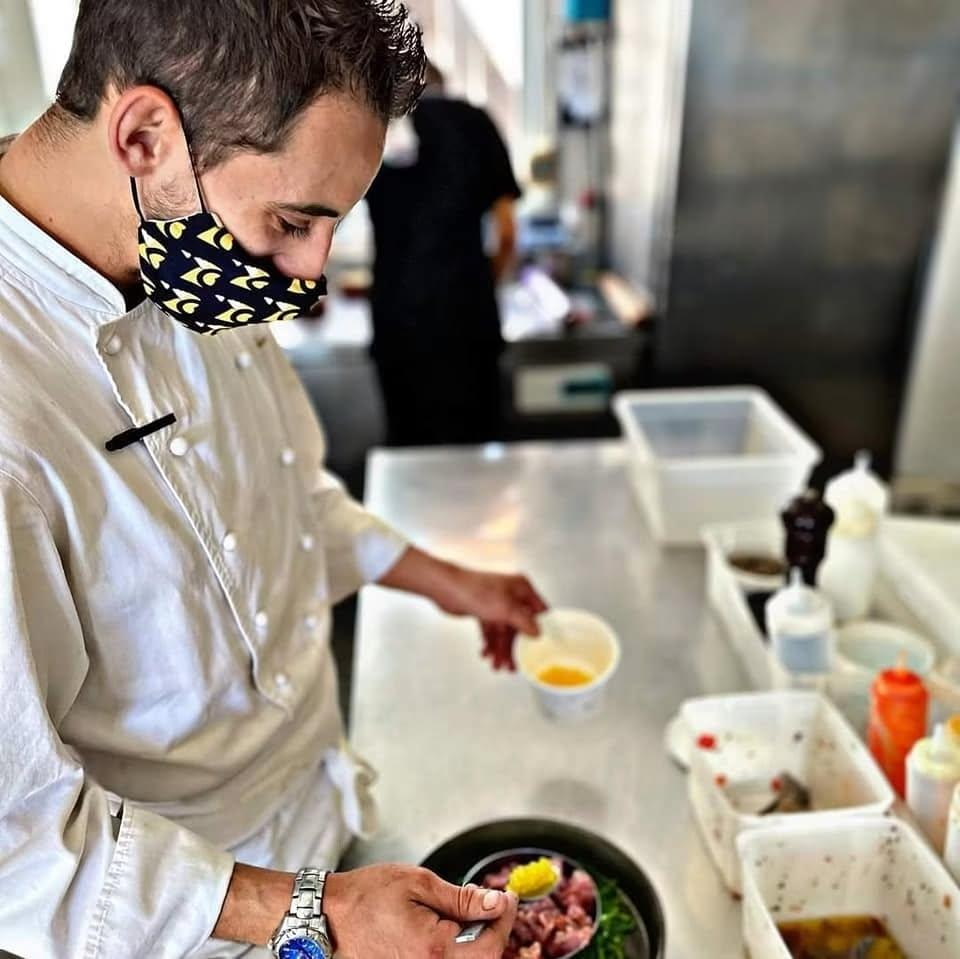
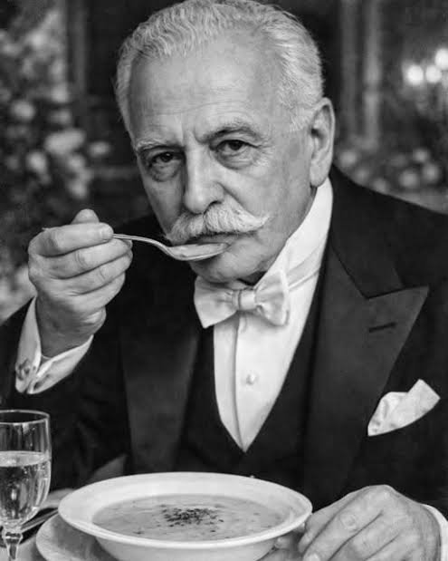
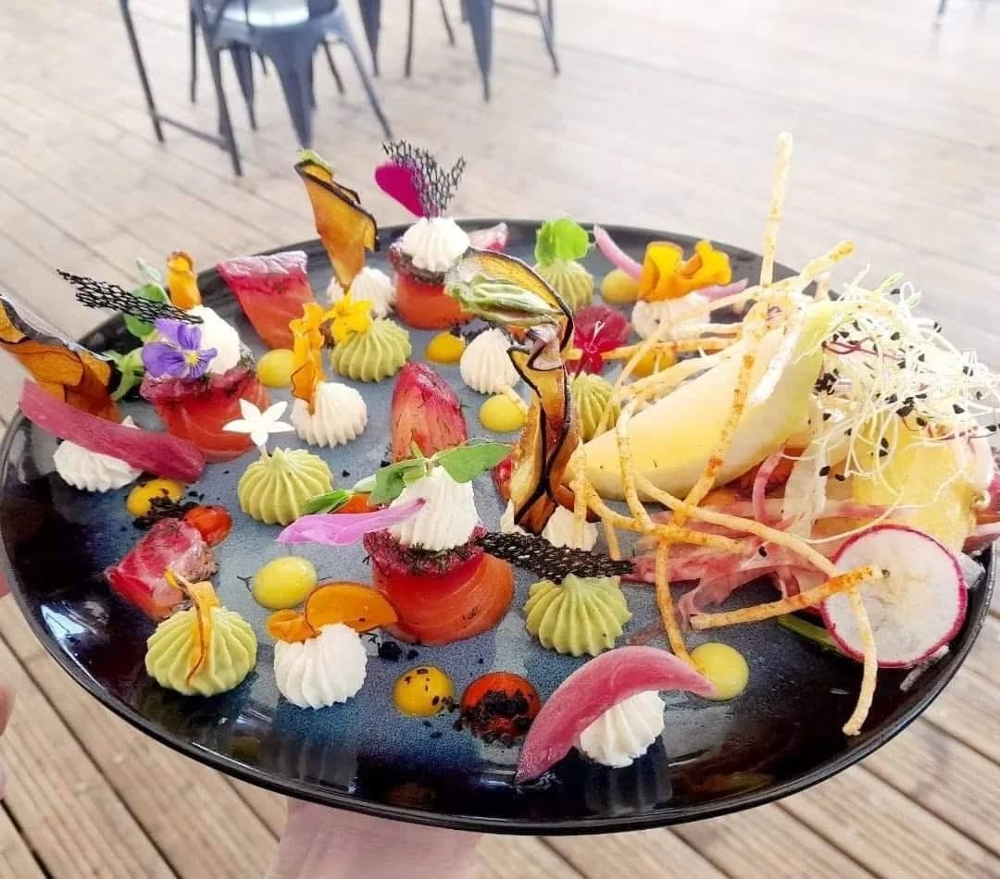
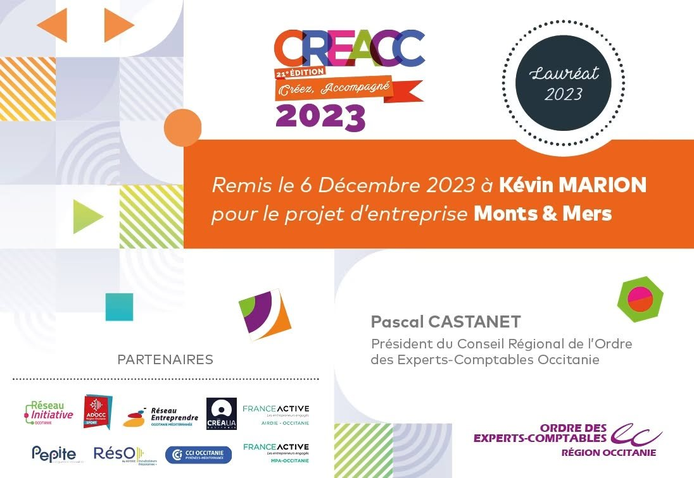

KévinMarion
Chef de cuisine créatif, avec la rigueur d'un chef d'entreprise. Formé à Lourdes, installé à Leucate.

Le goût
du concours.
Bac pro cuisine au lycée hôtelier de l'Arrouza à Lourdes, Kévin se distingue dès sa formation : médaille de bronze « Un des Meilleurs Apprentis de France » en cuisine froide, et 3e place au concours de jeunes cuisiniers des Disciples d'Auguste Escoffier.
Il passe par deux grandes maisons du Sud-Ouest : le Relais de la Poste de Jean Coussau à Magescq, puis La Bastide Gasconne de Michel Guérard à Barbotan-les-Thermes, où il revient comme demi-chef de partie en cuisine « santé minceur ».
Depuis, il enchaîne les saisons entre la montagne et la mer : chef de partie puis second de cuisine à Saint-Lary-Soulan, chef de cuisine sur le littoral audois. Il a aussi co-géré une crêperie à Port-Leucate.
Dans l'assiette : poissons frais et crustacés, légumes de saison, fleurs comestibles, et une vraie pâtisserie de restaurant.
Un cuisinier créatif.
Un chef d'entreprise.
Ses assiettes font revenir les clients. Ses chiffres font tenir la maison. Kévin a dirigé des cuisines, co-géré un établissement et monté son propre projet de restaurant.

En cuisine
- CréerCartes et menus de saison, plats signatures, cuisine entièrement faite maison.
- DresserPoissons frais et crustacés, légumes de saison, fleurs comestibles, pâtisserie de restaurant.
- RecevoirCuisine ouverte, buffets thématiques animés face à la clientèle, relation directe avec les clients.
- S'adapterDu semi-gastronomique d'hôtel à la cuisine « santé minceur » de Michel Guérard, jusqu'à 200 couverts par service.

En gestion
- RentabilitéCalcul des ratios et des marges, négociation des achats et des tarifs fournisseurs.
- ÉquipesRecrutement, formation et management de commis et de seconds de cuisine.
- OrganisationGestion des stocks, mise en place de saison, dossier HACCP.
- EntrepriseCo-gérant d'une crêperie à Port-Leucate, certifié « Construire et conduire un projet entrepreneurial » (BGE), lauréat Cré'ACC 2023.
Des Pyrénées
à la mer.
- 2026
Chef de cuisine, La Cabana del Tio
Leucate Plage.
- 2025
Chef de cuisine, Fish&Blues
La Franqui, Leucate. Cuisine de la mer.
- 2020-2024
Second, puis chef de cuisine, Le Dix Vins Plage
Port-Leucate. Création des cartes, postes froids et pâtisserie, 3 commis, poissons frais et crustacés.
- 2023
Pâtisserie, Le Kakou
Le Barcarès.
- 2018-2019
Co-gérant et responsable cuisine, Crêperie Saint-Michel
Port-Leucate. Achats, ratios et marges, HACCP, équipe.
- 2018
Chef de cuisine en remplacement, L'instant T
Ibis Styles, Toulouse.
- 2016-2018
Chef de partie, puis second de cuisine, La Mangeoire
Mercure Sensoria, Saint-Lary-Soulan. Semi-gastronomique, tout fait maison.
- 2017
Second de cuisine, La Mer à Table
Le Barcarès. Poissons et crustacés, pâtisserie.
- 2016
Demi-chef de partie, La Bastide Gasconne – Michel Guérard
Barbotan-les-Thermes. Cuisine gastronomique « santé minceur ».
- 2014-2017
Commis, second, puis chef de cuisine, L'Athena
Port-Leucate. Jusqu'à 200 couverts en pleine saison.
Formation
& brigades.
Diplôme et concours
- Bac professionnel cuisineLycée hôtelier de l'Arrouza, Lourdes, 2014
- Médaille de bronze, Un des Meilleurs Apprentis de FranceSpécialité cuisine froide
- 3e place, concours des Disciples d'Auguste EscoffierConcours de jeunes cuisiniers
Stages
- La Bastide Gasconne – Michel GuérardBarbotan-les-Thermes, commis, 2015
- Relais de la Poste – Jean CoussauMagescq, commis, 2014
- Hostellerie de FontangesOnet-le-Château, chef de partie, 2013
- Vacanciel HerrixkaGuéthary, commis, 2013
- La PastourelleLourdes, commis, 2012
Certifications
- HACCPHygiène alimentaire, restauration commerciale et collective
- SSTSauveteur secouriste du travail
- Permis d'exploitationDébits de boissons, 2023
- Construire et conduire un projet entrepreneurialBGE Narbonne
Ses
assiettes.
Dressées et photographiées en service par Kévin. Faites défiler.



« La bonne cuisine est la base du véritable bonheur. »

Monts
& Mers.
Son projet : un restaurant éco-responsable à Leucate, avec des produits locaux, engagés et uniquement de saison.
Le projet a été primé le 6 décembre 2023 à Montpellier au Cré'ACC (« Créez, accompagné »), le concours de création d'entreprise organisé par l'Ordre des experts-comptables d'Occitanie avec Initiative Occitanie, Réseau Entreprendre, France Active et la CCI Occitanie.
Lauréat Cré'ACC 2023 · 21e éditionLe projet est toujours en cours. Kévin cherche aujourd'hui le partenaire qui l'aidera à le concrétiser : associé, investisseur ou mécène.

Challenge, coopération, investissement
Écrivons
la suite ensemble.
- Un challengeUne ouverture, une reprise, une carte à réinventer : un projet qui demande un chef qui crée et qui gère.
- Une coopérationS'associer, co-gérer, monter une affaire à deux : Kévin l'a déjà fait, cuisine et chiffres compris.
- Un mécèneSoutenir ou investir dans Monts & Mers, son restaurant éco-responsable primé, et l'aider à ouvrir ses portes.
Kévin Marion
Chef de cuisine · Leucate
kevin.marion6@gmail.com